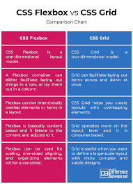

CSS Grid Layout excels at dividing a page into major regions or defining the relationship in terms of size, position, and layer, between parts of a control built from HTML primitives.
Like tables, grid layout enables an author to align elements into columns and rows. However, many more layouts are either possible or easier with CSS grid than they were with tables. For example, a grid container's child elements could position themselves so they actually overlap and layer, similar to CSS positioned elements.
